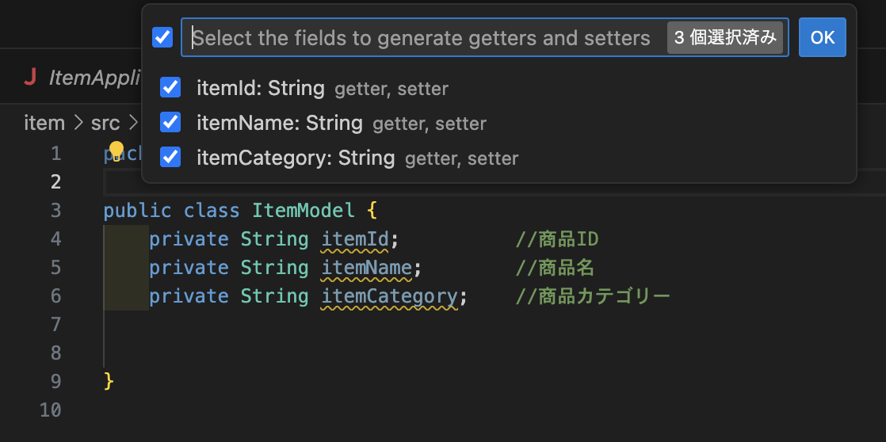
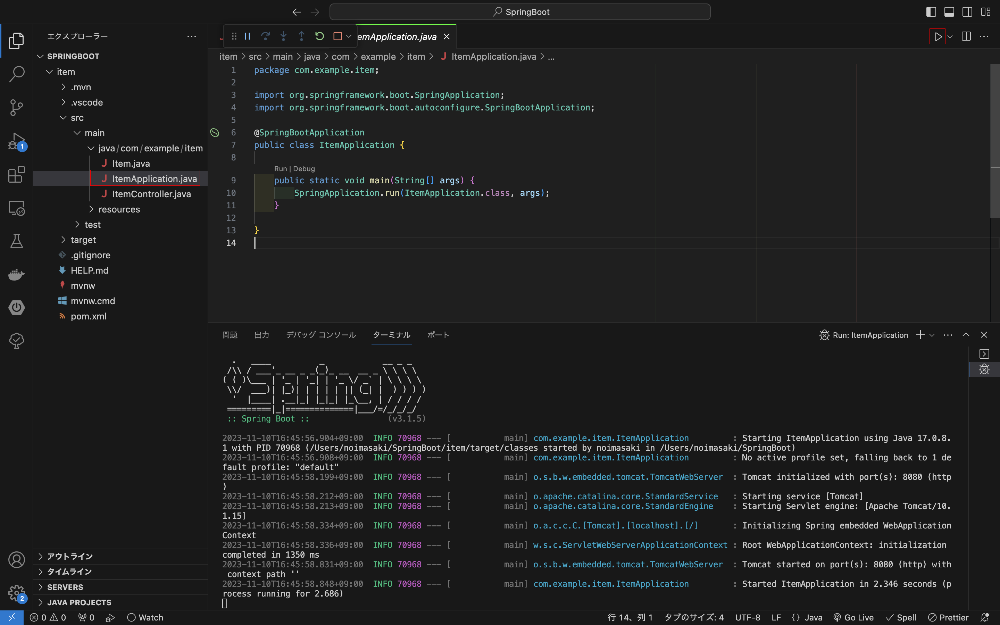
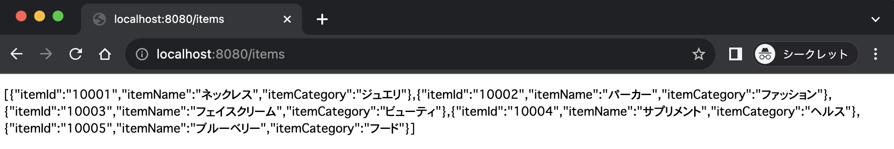
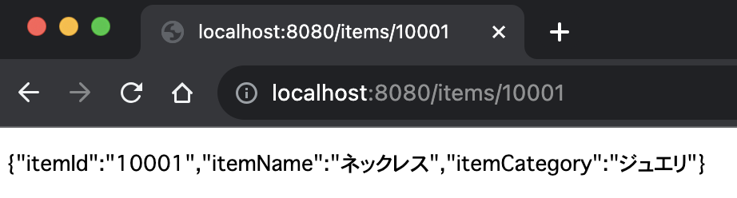
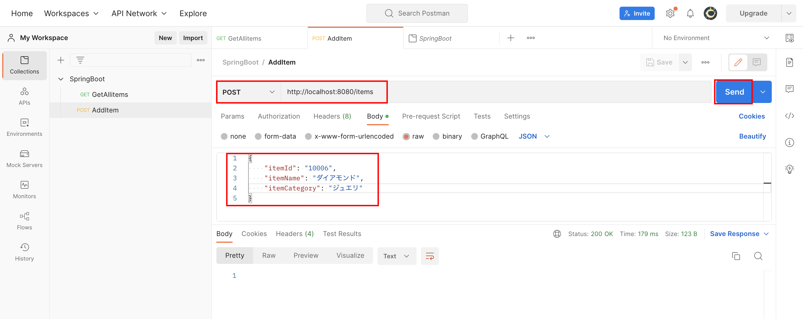
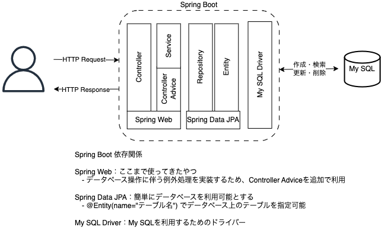
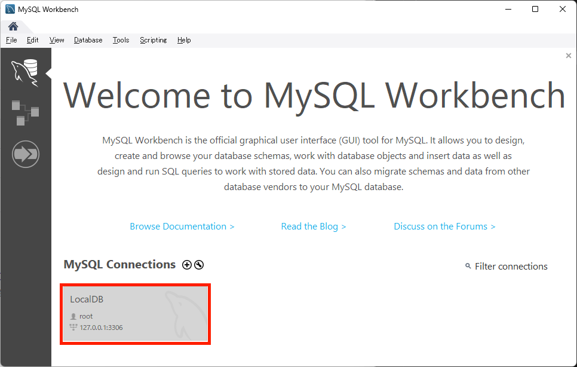

SpringBootでREST API
SpringBootを利用した簡単なREST APIを作成する。
1. 環境構築
Visual Studio Codeを利用してSpringBootを開始する。
1-1. プロジェクト作成
VS Codeのコマンドパレットから新しくプロジェクトを作成

Spring Boot version: 3.15
project language: Java
Group Id: com.example
Artifact Id: item
packaging type: Jar
Java version: 17 ※ 実行環境のJavaバージョンと合わせる必要がある
dependencies: Spring Web
作成されたディレクトリに、Controllerフォルダ、Modelフォルダ、Serviceフォルダを作成する
以下のようなフォルダ構成となる
item // Spring Boot プロジェクディレクトリ
├── pom.xml
├── src
│ ├── main // Javaファイルはここに作成
│ │ └── java/com/example/item
│ │ ├── ItemApplication.java
│ │ ├── Controller // Controllerクラス用ディレクトリ
│ │ ├── Model // Modelクラス用ディレクトリ
│ │ └── Service // Serviceクラス用ディレクトリ
│ └── test
└── target // ビルドしたjarファイルはここに格納される
1-2. モデル作成
ItemApplication.javaと同ディレクトリにモデル（Item.java）を作成し、次のオブジェクト作成
private String itemId; //商品ID
private String itemName; //商品名
private String itemCategory; //商品カテゴリー
GetterとSetterを作成 コードを記載してももちろんOKだが、右クリックから
ソースアクション > Generate Getters and Setters...を選択すると自動で作って便利

↓ GetterとSetterを作成したい対象を選択してあげると

コンストラクタを作成 こちらも
ソースアクション > Generate Constructors...から作成すると便利
Item.java
package com.example.item.Model;
public class Item {
private String itemId; //商品ID
private String itemName; //商品名
private String itemCategory; //商品カテゴリー
// コンストラクタ
public Item(String itemId, String itemName, String itemCategory) {
this.itemId = itemId;
this.itemName = itemName;
this.itemCategory = itemCategory;
}
// GetterとSetter
public String getItemId() {
return itemId;
}
public void setItemId(String itemId) {
this.itemId = itemId;
}
public String getItemName() {
return itemName;
}
public void setItemName(String itemName) {
this.itemName = itemName;
}
public String getItemCategory() {
return itemCategory;
}
public void setItemCategory(String itemCategory) {
this.itemCategory = itemCategory;
}
}
1-3. サービス作成
コントローラから呼ばれるビジネスロジックであるItemService.javaを作成
package com.example.item.Service;
import java.util.Arrays;
import java.util.List;
import org.springframework.stereotype.Service;
import com.example.item.Model.Item;
@Service
public class ItemService {
private List<Item> allItems = Arrays.asList(
new Item("10001", "ネックレス", "ジュエリ"),
new Item("10002", "パーカー", "ファッション"),
new Item("10003", "フェイスクリーム", "ビューティ"),
new Item("10004", "サプリメント", "ヘルス"),
new Item("10005", "ブルーベリー", "フード")
);
// 全てのItemリストを返すメソッド
public List<Item> getAllItems() {
return allItems;
}
// 個別のItemを返すメソッド
public Item getItem(String itemId) {
for (int i=0; i<allItems.size(); i++){
if (allItems.get(i).getItemId().equals(itemId)) {
return allItems.get(i);
}
}
return null; // itemIdが見つからなかったらnullを返す
}
}
1-4. コントローラ作成
ItemController.javaを作成
package com.example.item.Controller;
import java.util.List;
import org.springframework.beans.factory.annotation.Autowired;
import org.springframework.web.bind.annotation.GetMapping;
import org.springframework.web.bind.annotation.PathVariable;
import org.springframework.web.bind.annotation.RestController;
import com.example.item.Model.Item;
import com.example.item.Service.ItemService;
@RestController
public class ItemController {
// @Autowiredでインスタンス化は自動化
@Autowired
private ItemService itemService;
// @GetMappingで"/items"へアクセスしたときにgetAllItems()を実行
@GetMapping("/items")
public List<Item> getAllItems() {
return itemService.getAllItems();
}
// 全てのitemではなく、itemIdで個別の情報を返す
@GetMapping("/items/{id}")
public Item getItem(@PathVariable("id") String id){
return itemService.getItem(id);
}
}
2. GET（参照）
1. 環境構築が完了していれば、GETは実装できたことになる。
SpringBootを起動する 
ブラウザでhttp://localhost:8080/itemsにアクセスして、JSON形式で表示されればOK 
個別のitem情報も取得できるか確認http://localhost:8080/items/10001 
確認できたらSpringBootは停止する
3. POST（登録）

ポイント
サービスクラスに記述しているArrayにaddしようとするとエラーが発生するので、ArrayList<>でnewしてあげる必要がある
public class ItemService {
private List<Item> allItems = new ArrayList<> (Arrays.asList(
new Item("10001", "ネックレス", "ジュエリ"),
new Item("10002", "パーカー", "ファッション"),
new Item("10003", "フェイスクリーム", "ビューティ"),
new Item("10004", "サプリメント", "ヘルス"),
new Item("10005", "ブルーベリー", "フード")
));
PostmanでPOSTして確認してみる 
4. PUT(更新)

5. DELETE (削除)

データベース（MySQL）を利用する

データベース作成
MySQL Workbenchからデータベースを作成


プロジェクト作成
VS Codeのコマンドから新しくプロジェクトを作成
Spring Boot Version : 3.1.5 （一番上のやつ）
project language : Java
Group